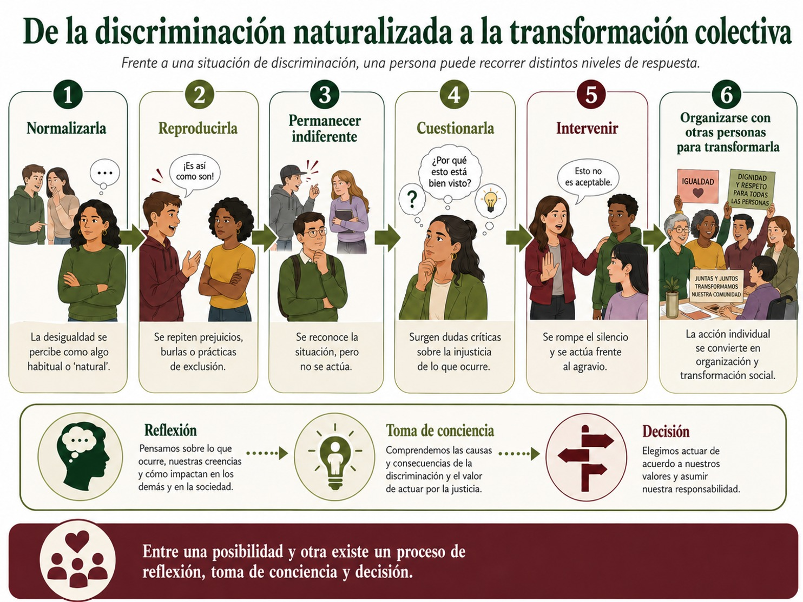
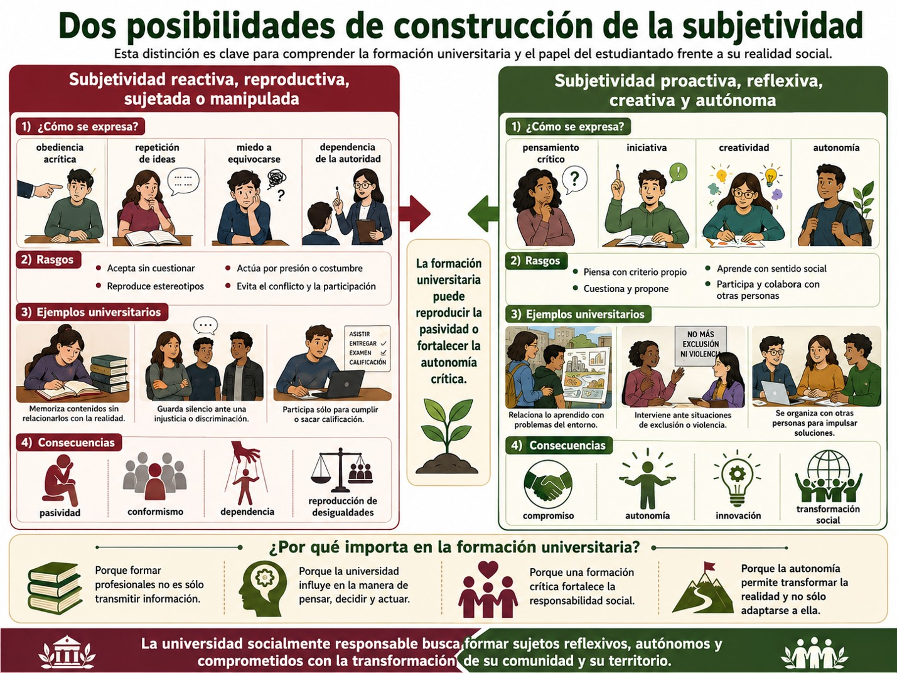

Para comprender nuestra relación con la sociedad, la comunidad y el territorio es necesario comenzar por la pregunta fundamental, cómo llegamos a pensar, sentir, valorar y actuar de determinada manera. Es muy importante reflexionar sobre ello porque las personas no nacemos con una visión acabada del mundo ni construimos nuestra identidad de manera aislada por el contrario, desde que nacemos entramos en una realidad que ya posee una historia, instituciones, normas, relaciones sociales, valores, discursos y prácticas culturales. Al mismo tiempo, esa realidad es interpretada, apropiada, cuestionada y, en determinadas circunstancias, transformada por las propias personas.
Esta relación constituye uno de los elementos centrales de los procesos de subjetivación. Ovidio D'Angelo Hernández (2004), propone comprender la subjetividad desde una perspectiva compleja, superando la separación tradicional entre individuo y sociedad. Para él, la subjetividad individual y la subjetividad social se construyen en la interrelación de las personas con su contexto social y natural y mediante las prácticas de su vida cotidiana. Por ello, la subjetividad puede entenderse como un producto histórico-cultural y, al mismo tiempo, como un proceso dinámico mediante el cual las personas producen sentidos acerca de sí mismas, de las demás personas y del mundo que habitan.
En ese sentido, la subjetividad comprende las formas mediante las cuales interpretamos y otorgamos significado a nuestra experiencia, incluye nuestras ideas, valores, emociones, expectativas, aspiraciones, creencias, recuerdos, temores, prejuicios, identidades y maneras de relacionarnos.
Por ello, la subjetividad no es simplemente algo que ocurre "dentro" de cada quien, es decir, lo que pensamos de nuestra persona, nuestras expectativas sobre el futuro, aquello que consideramos correcto o incorrecto, nuestras ideas acerca del éxito, la familia, el trabajo, la educación, las relaciones entre mujeres y hombres, la autoridad, la comunidad o la naturaleza se encuentran relacionadas con experiencias sociales concretas.
D'Angelo (2004), señala que la producción cultural -ideológica, espiritual y material- genera prácticas, tradiciones, creencias, valores, sentimientos, estereotipos y representaciones que forman parte del sustrato de la subjetividad social. Las personas se apropian de esos elementos, pero no necesariamente de manera mecánica o pasiva. Los interpretan desde sus propias experiencias y pueden reproducirlos, modificarlos o cuestionarlos. Debemos poner atención pues, en que existe una retroalimentación y mutua influencia entre la sociedad, las prácticas individuales y/o colectivas y la subjetividad.
El contexto histórico-político: la dimensión macrosocial
Ahora bien, comencemos por pensar en lo macro pues cuando nacemos, ninguna persona comienza su vida desde cero, es decir, llegamos a un mundo previamente organizado, atravesado por procesos históricos, económicos, políticos, sociales y culturales. Cada generación encuentra determinadas instituciones, relaciones económicas, tecnologías, normas jurídicas, formas de gobierno, desigualdades sociales, posibilidades educativas y representaciones culturales. Estas condiciones establecen un marco de posibilidades y restricciones a la familia a la que llegamos, que es el marco en el cual transcurre nuestra vida cotidiana.
D'Angelo (2004), enfatiza precisamente el papel de los factores macrosociales estructurales en la producción de las subjetividades individuales dado que las estructuras económicas, las instituciones, las relaciones de poder, las prácticas políticas y las tradiciones culturales influyen en los modos mediante los cuales las personas comprenden la realidad. Sin embargo, esta influencia no constituye una determinación absoluta: las personas pueden interpretar y resignificar las condiciones que encuentran.
Pensemos, por ejemplo, en jóvenes que crecen en épocas históricas distintas. Las expectativas acerca del empleo, la educación universitaria, las relaciones de género, la participación política, el medio ambiente o las tecnologías digitales no son idénticas para una persona nacida en 1960, 1990 o 2005. Cada generación se socializa dentro de condiciones históricas particulares que intervienen en la construcción de sus aspiraciones y maneras de comprender el mundo. Por esta razón, nuestras ideas y decisiones aparentemente individuales poseen también una dimensión histórica y política.
La familia: el espacio microsocial de la experiencia cotidiana
La familia es la unidad social básica o la red social primaria o la institución social histórica en cuyo seno se encuentran los primeros lazos sociales de interdependencia en su mayoría por parentesco. En ese sentido, constituye uno de los primeros ámbitos donde experimentamos relaciones sociales concretas, a través de las cuales aprendemos lenguajes, afectos, comportamientos, formas de convivencia, distribuciones de responsabilidades, relaciones con la autoridad y maneras de afrontar los conflictos.
- En la vida familiar pueden transmitirse, entre muchos otros elementos:
- • maneras de expresar o contener las emociones;
- • expectativas acerca de mujeres y hombres;
- • concepciones sobre el trabajo y el estudio;
- • formas de ejercer autoridad;
- • prácticas de cuidado;
- • creencias religiosas;
- • hábitos de consumo;
- • ideas sobre éxito y fracaso;
- • percepciones acerca de otros grupos sociales;
- • formas de solidaridad, cooperación, discriminación o exclusión.
D'Angelo (2004), permite observar claramente esta relación entre los niveles macro y micro social que atraviesan a la familia. Por ejemplo de la religiosidad popular: las ideologías y normas de las instituciones religiosas a las que pertenece la familia corresponden a la dimensión macrosocial, pero el cómo la cosmovisión religiosa se imprima en las interacciones familiares constituye el nivel microsocial. Y ambas se encontrarse en la formación de determinadas configuraciones subjetivas e intersubjetivas.
La familia, por tanto, no se encuentra aislada de la sociedad, por el contrario, en sus relaciones cotidianas se expresan elementos provenientes del contexto histórico, económico, político y cultural.
El modelo cultural: valores, representaciones y formas de vida
Entre las estructuras sociales y las prácticas cotidianas se encuentra también la cultura, entendida como el conjunto de significados, valores, representaciones, costumbres, discursos y prácticas mediante los cuales una sociedad interpreta y organiza diferentes dimensiones de la vida. La cultura si bien podría parecer algo abstracto, en realidad está presente en la vida a través de cómo entendemos el mundo, por ejemplo, nos proporciona ciertos referentes para contestarnos preguntas como:
- • ¿Qué significa tener éxito?
- • ¿Cómo debe comportarse una mujer o un hombre?
- • ¿Qué entendemos por una buena familia?
- • ¿Qué trabajos poseen mayor reconocimiento?
- • ¿Cómo nos relacionamos con la autoridad?
- • ¿Qué consideramos normal?
- • ¿Cómo concebimos nuestra relación con la naturaleza?
Muchas de estas respuestas pueden parecernos naturales porque las aprendemos desde edades tempranas y se convierten en hábitos y formas cotidianas de comportamiento. D'Angelo (2004), señala precisamente que algunos patrones de interacción social adquieren un carácter inercial y prerreflexivo y se convierten en reglas tácitas que orientan la conducta sin que necesariamente pensemos conscientemente en ellas. Algunas de estas prácticas pueden facilitar la convivencia; otras pueden convertirse en obstáculos para el cambio social.
Aquí aparece una cuestión fundamental para tu formación universitaria: lo cotidiano también debe ser problematizado. Recordarás que en la UCA de Perspectiva de Género para el Diseño Social, revisaste el tema de las distintas violencias contra las mujeres, quizá ahí te diste cuenta de que muchas de las prácticas cotidianas en nuestra sociedad son prácticas violentas contra las mujeres. En ese sentido es importante decir que, el que una práctica sea habitual no significa necesariamente que sea justa, sostenible o deseable. La reproducción de esas prácticas, sin embargo, nos habla de pautas culturales muy arraigadas.
Contexto histórico-político, familia y cultura: una relación compleja
Estos tres ámbitos no actúan de manera independiente, de hecho, constituyen una red de relaciones. Ahora analicemos de qué manera estos tres ámbitos interactúan. Observa el siguiente diagrama:

Este diagrama es muy ilustrativo porque nos permite pensar cómo la sociedad influye sobre las personas, pero también en cómo producimos y reproducimos la sociedad a través de nuestras relaciones intersubjetivas. Además, nos permite pensar en cómo la cultura, a través de sus pautas, costumbres o tradiciones influye sobre las familias, y a su vez, en cómo las familias reproducen, reinterpretan o transforman la cultura. Asimismo, podemos reflexionar sobre cómo las instituciones condicionan las prácticas sociales a través de las reglas, ordenamientos, protocolos, calendarios, leyes, etc., y cómo a su vez, la acción colectiva también puede modificar las instituciones que regulan la sociedad. Esta dinámica permite comprender la afirmación retomada por D'Angelo (2004), desde el pensamiento complejo: el individuo está en la sociedad y la sociedad está en el individuo.
De la subjetivación a la implicación
Comprender cómo se construye nuestra subjetividad representa solamente un primer momento. El siguiente consiste en reconocer qué hacemos frente a la realidad de la que formamos parte, entonces aparece el concepto de implicación. Estar implicado significa reconocer que no somos observadores externos de los problemas sociales, que formamos parte de relaciones, instituciones, territorios y prácticas que pueden contribuir tanto a reproducir como a transformar determinadas condiciones.
Por ejemplo, el siguiente diagrama te explica que puede hacer alguien en una situación de discriminación:

Por eso D'Angelo contrapone dos posibilidades de construcción de la subjetividad: una subjetividad reactiva, reproductiva, sujetada o manipulada, y una subjetividad proactiva, reflexiva, creativa y autónoma. Esta distinción es especialmente importante para pensar la formación universitaria. Observa el siguiente diagrama explicativo:

Ahora podemos pensar en dos dimensiones de la implicación, la individual y la colectiva.
La implicación individual comienza cuando una persona reconoce críticamente su propia posición dentro de las relaciones sociales. Implica preguntarse:
- • ¿De dónde provienen algunas de mis ideas?
- • ¿Qué aprendí en mi familia?
- • ¿Qué valores considero propios y cuáles nunca había cuestionado?
- • ¿Qué prácticas culturales influyen en mis decisiones?
- • ¿Qué privilegios, oportunidades o desigualdades forman parte de mi experiencia?
- • ¿Qué prácticas reproduzco cotidianamente?
- • ¿Qué puedo transformar?
Esta reflexión no pretende culpabilizar a la persona por los problemas estructurales. Su finalidad es hacer visible la relación entre biografía y sociedad, entre nuestra experiencia particular y las condiciones históricas en las que vivimos.
Por su parte, la implicación colectiva nos permite pensar que la transformación social no depende únicamente de decisiones individuales, sino que se da cuando las personas comparten experiencias, identifican problemas comunes, dialogan, construyen objetivos y desarrollan formas de organización. En ese sentido, determinados grupos se convierten en sujetos sociales en la medida en que desarrollan procesos de organización, articulación y acción orientados hacia la transformación de sus condiciones de vida. Esto, a su vez, nos permite pensar que la subjetividad también posee una dimensión colectiva y política.
Podemos pensar este proceso como una secuencia como podemos ver en el diagrama:

Como podemos observar, en principio se debe dar un cuestionamiento, una posición crítica sobre lo que aparece como normal o lo que aparece como un problema o una situación individual, para ello es indispensable que desarrollemos autonomía. La autonomía no significa independencia absoluta respecto de la sociedad pues ninguna persona puede desprenderse completamente del contexto cultural, económico e histórico en el que vive. Ser autónomo significa desarrollar la capacidad de pensar con criterio propio, interpretar críticamente la realidad, valorar alternativas y participar conscientemente en las decisiones que afectan nuestra vida y la vida colectiva.
D'Angelo (2004), relaciona esta autonomía con la reflexividad, la responsabilidad, la intencionalidad, la participación y el compromiso ético. Una formación orientada hacia la autonomía debe permitir que las personas pasen de la aceptación acrítica de normas y valores hacia la capacidad de examinarlos, argumentarlos y, cuando sea necesario, transformarlos. Por eso la educación posee una importancia fundamental: puede limitarse a reproducir conocimientos y normas o puede generar condiciones para que cada estudiante se convierta en una persona reflexiva, creativa y socialmente comprometida.
Ingresar a la universidad también forma parte de tu proceso de subjetivación
La universidad te pondrá en contacto con nuevos conocimientos, personas, experiencias, perspectivas y problemas. Algunas ideas que parecían evidentes pueden comenzar a ser cuestionadas; otras pueden adquirir nuevos significados. Como hemos visto la formación universitaria no consiste solamente en adquirir conocimientos profesionales, también supone desarrollar la capacidad de comprender críticamente quién eres, desde qué contexto interpretas la realidad, cómo tus experiencias familiares y culturales intervienen en tu manera de comprenderla y cuál puede ser tu responsabilidad frente a los problemas de tu comunidad y territorio.
Y como puedes ver, esta reflexión se vincula directamente con la RSU pues una universidad socialmente responsable necesita formar profesionistas capaces de reconocer que sus decisiones tienen consecuencias sobre otras personas, comunidades y territorios. Ese reconocimiento también nos permite comprender que somos producto de nuestra sociedad, pero también participamos en su producción.
El contexto histórico-político, la familia y la cultura intervienen en la construcción de nuestras identidades, valores y prácticas; sin embargo, esta relación no es determinista. Mediante la reflexión crítica, el diálogo, la participación y la acción colectiva podemos cuestionar aquello que hemos aprendido, resignificar nuestras experiencias y construir otras formas posibles de convivencia.
Por ello, comprender los procesos de subjetivación significa comprender también nuestra capacidad de agencia, lo cual implica reconocer las condiciones que nos han formado y, al mismo tiempo, descubrir las posibilidades que tenemos para intervenir responsablemente en ellas. Así, podemos comprender que la subjetividad es una construcción histórico-cultural, en su articulación entre procesos micro y macrosociales y en su planteamiento de la autonomía como posibilidad de participación reflexiva y transformadora.
- D´Angelo Hernández, Ovidio (2004). La subjetividad y la complejidad. Procesos de construcción y transformación individual y social. La Habana: CIPS, Centro de Investigaciones Psicológicas y Sociológicas.
Te recomendamos ver estos videos para profundizar sobre este tema: